| プロメテウスの罠〔１６〕 カワセミ日記「あと５年は戻れない」 (朝日新聞デジタルＳＥＬＥＣＴ) | |
| 朝日新聞 | |
| (2013) | |
福島県飯館村の長泥。２０１１年７月２３日、空間の放射線量は毎時１５マイクロシーベルトだった。ため池近くの崖でカワセミが子育てをしていた。写真家はカメラを設置し、定点観測を始めた。放射能に汚染され、全村避難で人がいなくなった環境でも懸命に命を育む生き物たちの姿を縦糸に、高線量で住めない環境に２カ月も暮らした元住民の無念の声や原子力委員会や国の不可解な判断などを横糸にして、福島原発爆発後に降りかかった美しい古里の悲劇の顛末を丁寧に紡ぎだす。
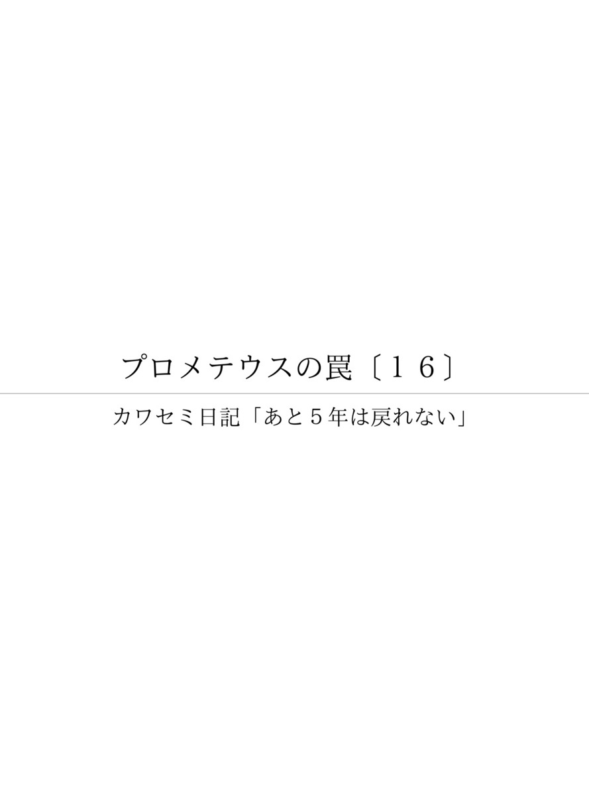
内容紹介
福島県飯館村の長泥。２０１１年７月２３日、空間の放射線量は毎時１５マイクロシーベルトだった。ため池近くの崖でカワセミが子育てをしていた。写真家はカメラを設置し、定点観測を始めた。放射能に汚染され、全村避難で人がいなくなった環境でも懸命に命を育む生き物たちの姿を縦糸に、高線量で住めない環境に２カ月も暮らした元住民の無念の声や原子力委員会や国の不可解な判断などを横糸にして、福島原発爆発後に降りかかった美しい古里の悲劇の顛末を丁寧に紡ぎだす。
初出
朝日新聞 二〇一二年八月十六日～九月四日
第１章 巣穴発見「これだ！」
第２章 封じられた星降る里
第３章 気づかなかった脅威
第４章 ３３キロ離れていれば
第５章 長泥は抜け落ちた
第６章 なぜ防護服なんだ
第７章 小さな営み、淡々と
第８章 そしてコイが死んだ
第９章 浮かんだ相関関係
第１０章 カードキーにして
第１１章 出稼ぎして家守った
第１２章 ２カ月暮らした不安
第１３章 なんで今になって
第１４章 賠償基準の懸念的中
第１５章 「家が欲しい」切実
第１６章 息づく開拓の歴史
第１７章 家族も心も分断する
第１８章 村がズタズタになる
第１９章 昔には戻れないのか
第２０章 楽園を記録し続ける
あ、カワセミの巣穴がある！
２０１１年の７月２３日、水戸市に住む写真家の関根学（せきねまなぶ）（４７）は、福島県飯舘（いいたて）村の長泥（ながどろ）を歩いていた。緑の中に花が咲く美しい集落だった。ため池の横にちょっとした崖があり、小さな穴が開いていた。カワセミが子育てをしている最中だった。
関根は人間社会と野生生物の関係性を問う写真を追い続けてきた。
震災３カ月後の１１年６月、南相馬市から飯舘にかけての山中を車で走っているときにサルの群れと出合った。浪江町の赤宇木（あこうぎ）では人家の前を動かないネコがいた。飯舘では家々の庭に色とりどりの花が咲き、ハチやチョウが乱舞していた。
放射能に汚染され、人が逃げたところにも小さな生き物たちがいる。そのことが胸に迫った。生き物たちの姿を写真に残したい。長い期間、じっくりと記録したい。いや記録するべきだ、そう思った。
カワセミの巣穴を発見したとき、「これだ！」と感じた。カワセミは一年中その場にいる。えさはため池の魚で、同じ餌場に来る。カメラをセットすれば定点観測できる。
空間線量は毎時１５マイクロシーベルトだった。青い宝石とも形容されるカワセミに緑の里山。日本の原風景のような光景と放射能との対比が痛々しかった。だが放射能は写真に写らない。ならば線量計をつけよう。
作業を始めた。赤外線センサーを使うと電池の消耗が激しい。止まり木にする丸太の杭をくりぬいてステンレスのパイプを入れた。杭の上に小皿を置き、野鳥が乗るとカメラのシャッターが下りる仕掛けにした。
ホームセンターで食品保存用の「タッパー」を買い、その中にニコンの一眼レフデジタルカメラを入れた。レンズ部分に穴を開け、ガラス板をはめる。タッパー全体を黒く塗り、カメラは頑丈な三脚に据えた。
線量計を収めるケースも自作した。市販のアクリル板をカッターで切り、接着剤を使って箱にする。雨水が入ると線量計が使えなくなるので完全防水にする必要があった。難しい作業だった。
動作を試した後、長泥に設置したのは１１年９月１７日。ため池に杭を立て、１メートル離れた場所にカメラを据えた。杭にくっつけたアクリル箱に線量計を入れ、累積数値がカメラに写るようにした。
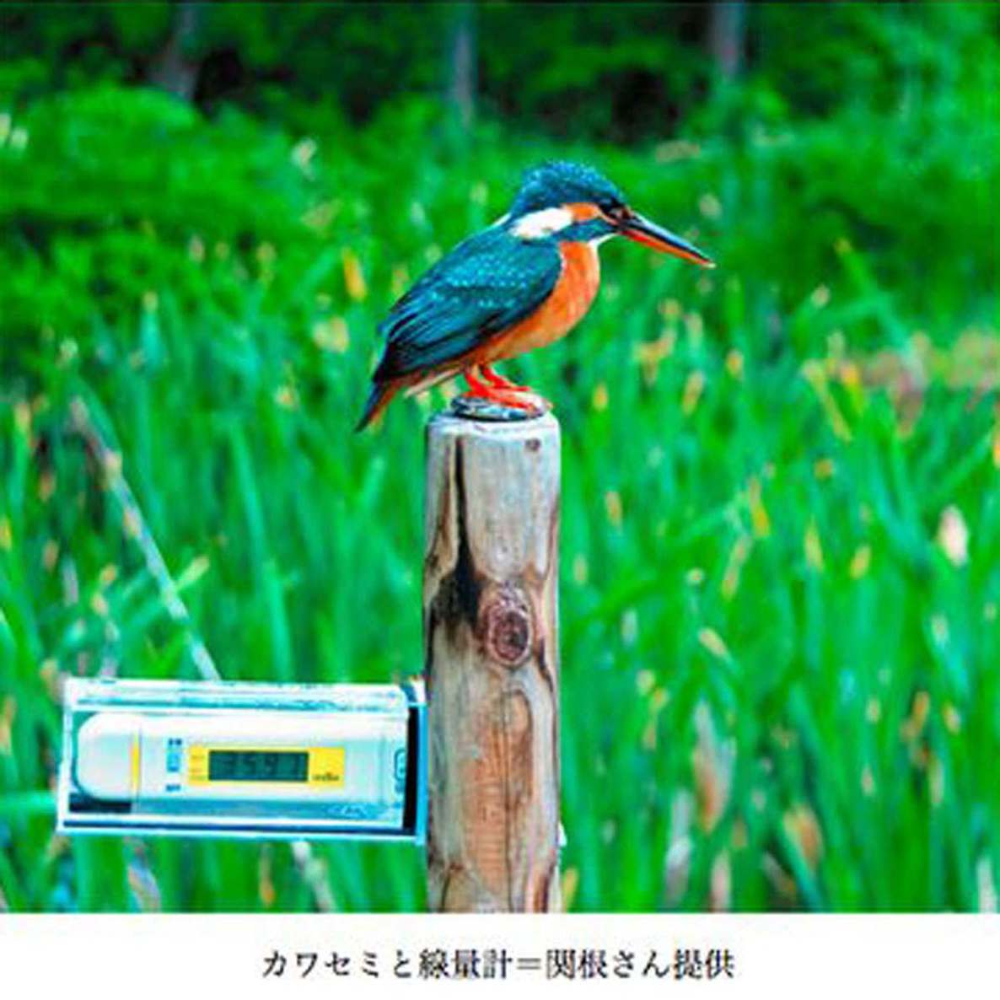
車を止め、ライトを消すと完全な暗黒となった。
１２年７月１６日の午後１１時過ぎ、飯舘村長泥。あと１時間弱でこの地区はバリケード封鎖される。
１カ月前、国の方針で飯舘村は帰還困難、居住制限、避難指示解除準備の３区域に分けられることが決まった。区分けの基準は放射線量が多いか少ないか。唯一、長泥だけが最短５年の封鎖を伴う帰還困難区域とされた。それだけ汚染度は高い。
車の外に出て天を見た。あっと声を上げそうになるほどたくさんの星が瞬いていた。空いっぱいの星々の中を天の川が貫く。美しい。怖いくらい美しい。
「ここはもともと星きれいなんだよ。けむり出す施設もないし」
傍らで長泥区長、鴫原良友（しぎはらよしとも）（６１）の声がする。
前日、地区民が集まって道路沿いの草を刈った。７４世帯・２７６人のうち約６０人が草刈り機を持って避難先から参加した。鴫原も福島市の避難住宅から駆け付けた。
「感謝の気持ちを込めてな、最後の手入れをしたんだよ」
飯舘村が全村避難を指示されたのは１１年４月。長泥の住民も６月末までに地区を出たが、避難後も地区への出入りは自由だった。家の掃除もできたし、家に残るイヌにえさをやりにくることもできた。そんな自由な雰囲気もこの日限りとなる。
この夜、鴫原は封鎖に立ち会うために来た。少なくても封鎖は５年間続く。生まれ育った場所なのに、住み慣れた家も田畑もあるのに、これからは許可証なしでは入れない。身を切られるような、受け入れ難い現実だった。だからこそ封鎖に立ち会わなければならないと思っていた。
１２年７月１７日午前０時、地区境界にある桜並木の峠道。原子力災害対策本部の内閣府参事官、斉藤和重（さいとうかずしげ）らがバリケードをゆっくり閉めて鍵をかけた。報道のシャッター音が響く。ストロボが光る。同時刻、他の５カ所でもバリケードが閉められたはずだ。
報道陣に囲まれて鴫原が口を開いた。
「悔しいっていったらいいか、情けないといったらいいか。長泥だけ孤立した感じだな」
長泥は標高５００メートルの阿武隈高地に広がっている。福島第一原発からは３３キロ。実はこの距離感が、長泥を微妙な立ち位置に追い込んだ。
原発から３０キロ以上離れているから大丈夫、住民誰もがそう思っていたのだが......。
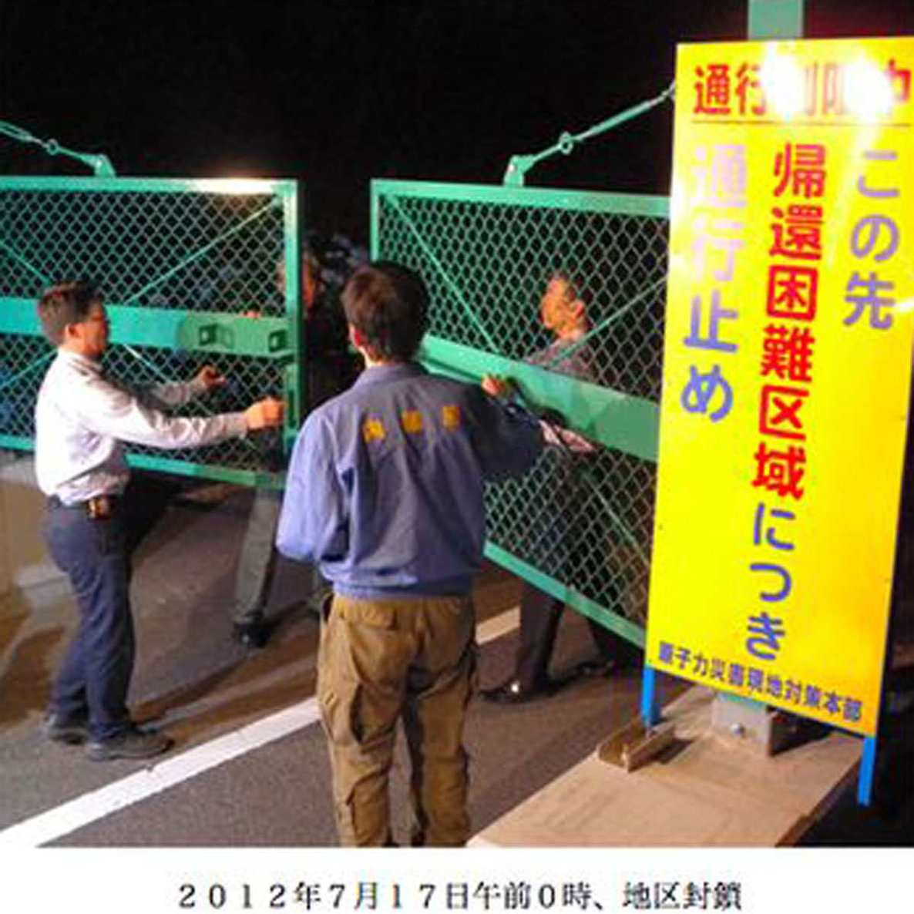
飯舘村長泥にとって、運命の日は１１年の３月１５日だった。
午前６時過ぎ、福島第一原発４号機が爆発する。現場からは２号機の異常も伝えられた。午前９時、原発正門の放射線量は毎時１万１９３０マイクロシーベルトに達する。
この日、未明から風は南に吹いていた。観測値と予報を組み合わせたＳＰＥＥＤＩ（放射能拡散予測）のデータを見ると、風向きが変わり始めるのは正午ごろ。午後２時には北西方向に吹くようになる。当初は南に流れたガス状の放射能雲は、このころから北西に向かい始めたと推測される。
原発の北西には浪江町の山間部が広がり、その先に長泥があった。
浪江の山間部、津島地区には津波と放射能から逃れてきた町民約８千人が避難していた。原発からはちょうど３０キロの距離だった。町津島支所は臨時の町役場となり、町長の馬場有（ばばたもつ）（６３）らが陣取っていた。
１１年３月１５日午前７時、馬場は町ぐるみで二本松市に避難することを決める。決断のきっかけは前日の３号機爆発だ。早朝、馬場が二本松市長を訪ね、８千人の受け入れを了解してもらった。
午前１０時に区長会を開き、町民に撤退を伝えた。終了後、テレビが２０～３０キロ圏の屋内退避を報じていた。
車とガソリンがある人は車で二本松に向かい、そのほかの町民には町がバスを用意した。避難バスの最終便は午後２時だった。風向きが北西に変わるころ、多くの浪江町民は津島から脱出していた。
対照的なのは飯舘村長泥の住民たちだった。
長泥は原発から３３キロ離れていて、原発の存在感はもともと薄い。放射能汚染の脅威は意識の外だった。
長泥中心部に住む菅野恵一（かんのけいいち）（５０）は津島と長泥に挟まれた浪江町赤宇木の電子部品工場で責任者を務めていた。震災後も電気が通じていたので、工場を稼働させようとした。
「１４日の月曜日、会社の人間に出てこいよーって電話したら、１人しか出てこなかった」
社員の多くは津島から来ていた。津島に行ってみると、地区は避難民でいっぱい。
「１５日午後だったかな、その人たちもみんないなくなっちゃった。そんときも俺まだ分かんなかったんだよな、放射能のことは」
１１年３月１５日夕から飯舘村では雪、雨が降り始めた。雪や雨と一緒になって放射能も地上に降った。
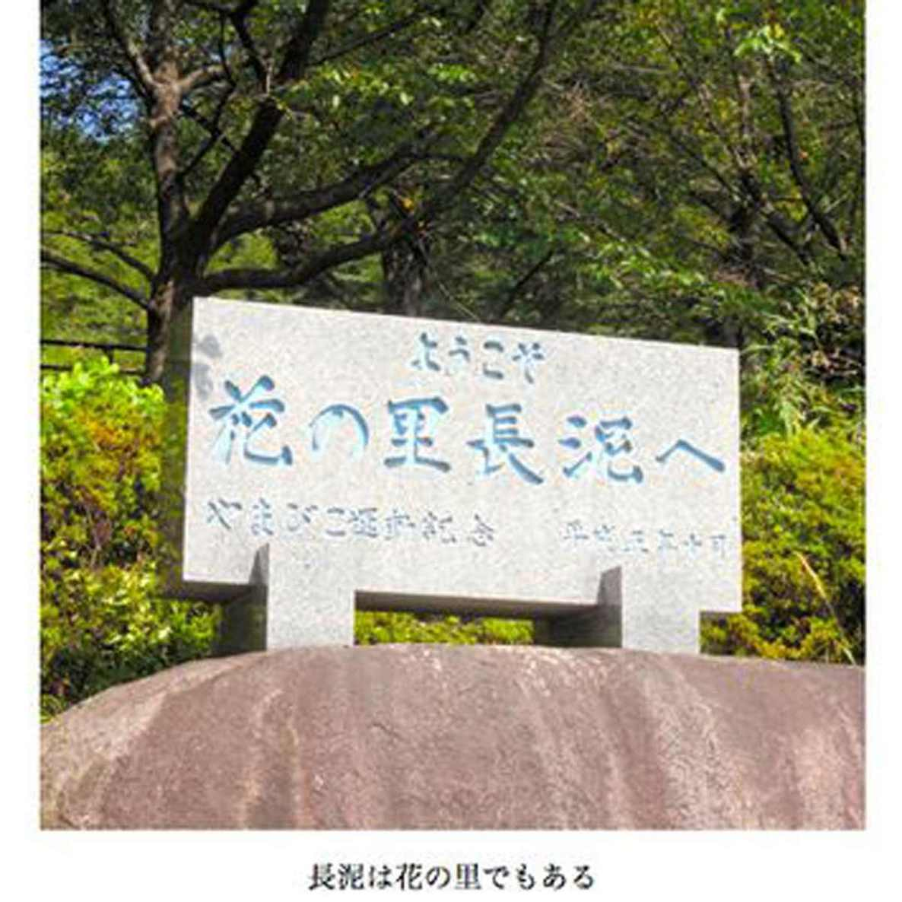
１１年３月１１日の原発事故直後、政府は３キロ、１０キロ、２０キロと同心円状に避難区域を広げた。１５日には２０～３０キロも屋内退避とされる。屋内に人はいるのに、３０キロ以内は物資も届かない。報道の人間すら大部分がいなくなる。そんな状況が起きた。
半面、３０キロ離れれば大丈夫という感覚も出た。飯舘村で最も原発に近いのは原発から３３キロの長泥周辺であり、村の大部分はそれよりも遠い。安全を信じて南相馬市や浪江町から１２００人が飯舘に避難し、村は１１年３月１７日まで炊き出しをして援助した。
長泥地区が炊き出しに参加したのは１１年３月１５日朝。ちょうど福島第一原発２号機が大量の放射性物質を吐き出し始めたころだった。
風向きの変化や風の強さはＳＰＥＥＤＩによって国は把握していた。原発の北西方向が汚染されたことを推測した上で、１１年３月１５日午後９時前に文部科学省は原発の北西２０キロ余りに位置する浪江町の３カ所で放射線量を測定する。毎時２５５から３３０マイクロシーベルトという高い値が出た。
その北西１０キロが長泥だった。
長泥区長、鴫原良友（６１）のカメラには翌１６日の午前９時に地区集会所でおにぎりをつくる長泥の人たちの姿が写っている。この日の昼に国は原発から北西３０キロを少し出た浪江町の４カ所で放射線量を測定する。最も高かったのは３１キロ地点の赤宇木で、毎時８０・０マイクロシーベルト。
長泥が測定ポイントになるのは１１年３月１７日昼から。同日は１時間おきに３回測定され、毎時９１・８と９５・１、７８・２マイクロシーベルトを記録する。赤宇木も１時間おきに３回で、毎時１６７、１７０、１５８マイクロ。
短時間に何度も測定したのは原子力安全委員会が放射能雲の通過を予測、連続測定をさせて原発からの放出量を逆算しようとしたからだ。データは安全委にすぐ届いたが、線量が高い場所から人々を逃がす発想、浴びる放射線を少しでも少なくする発想は安全委にはなかった。
委員の象徴的な発言が安全委の速記録に残されている。
１１年４月１０日に開かれた臨時会議で、久住静代（くすみしずよ）は１年間に１００ミリシーベルトまで被曝（ひばく）しても影響はない、心配ないのだ、と強調した。その発言は１カ月後に自ら撤回するが、安全委の判断の根底に「ある程度の基準に届くまでは手を打つ必要はない」的な考えがあった可能性がある。
もう一つ、長泥にとっては信じられないようなことも起きていた。
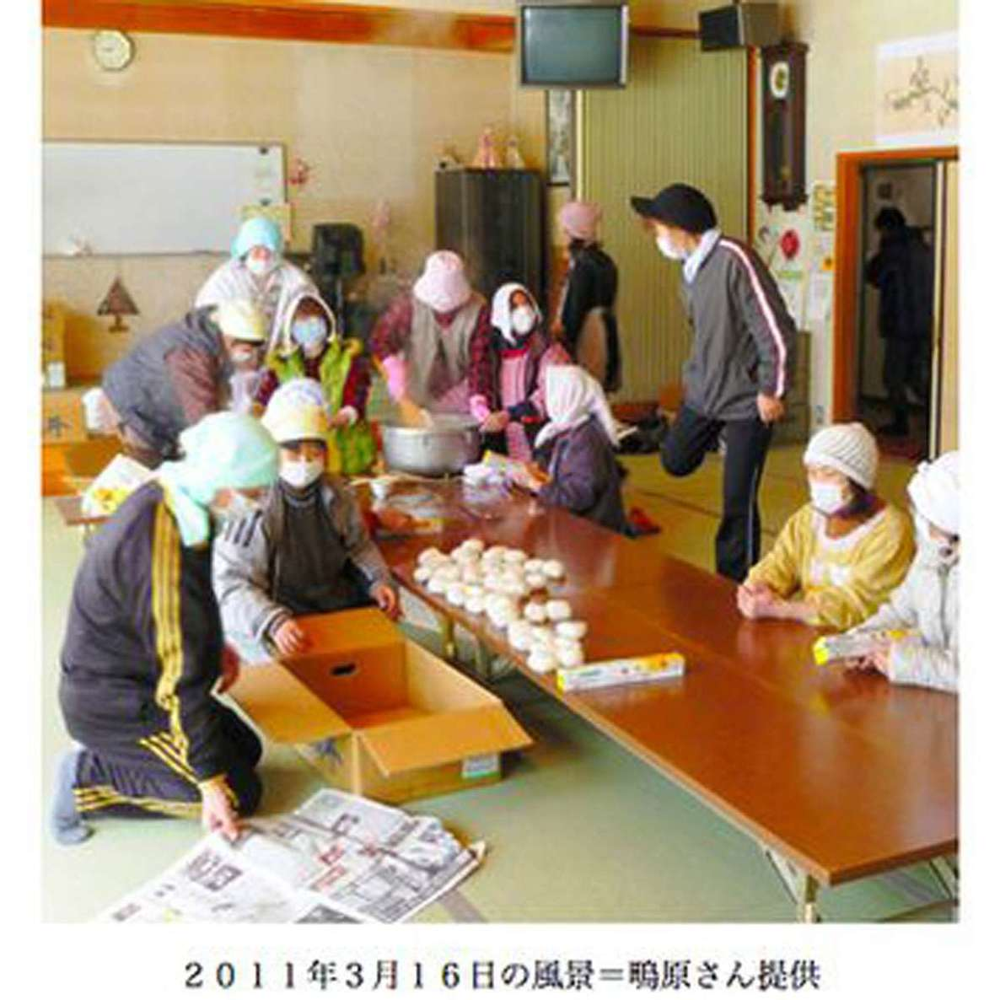
１１年３月１６日の朝、原子力安全委員会は放射線量の実測値を評価する役を託された。
実測は文部科学省や日本原子力研究開発機構の測定チームが担っていた。彼らはこの道２０年、３０年のプロ集団。被曝（ひばく）の恐怖と闘いながら、必死で測定を続けていたのだが......。
安全委がまず出したのは、測定値自体への疑問だった。まるでこんな高い線量が出るはずがない、とでもいうように。安全委は測定機器のチェックなどを注文して現場をさらに忙しくさせる。現場の緊迫感と霞が関の空気には微妙なずれがあった。
次に安全委は原発から３０キロ以遠の場所で群を抜いて線量が高い三つの測定ポイントに注目する。ポイント３１の浪江町津島、３２の同町赤宇木、そして３３の飯舘村長泥。
１１年３月１８日午前３時、安全委は文科省にポイント３１、３２、３３の地形、民家の有無、住民退避の状況を報告するようにファクスで指示する。これらの地域にまだ人がいるのかどうかを安全委は知ろうとしていた。
回答は午前５時。状況不明、現地へ至急確認を、と書かれていた。
それを受け、安全委は午前７時５０分に原子力災害対策本部事務局に質問する。回答のファクスは午後７時４７分。「３２のある浪江町は町の判断で避難済み」とあった。
不思議なことに、３１と３３については抜け落ちていた。３１が浪江町であることも、３３の長泥に住民がいたことも電話一本で分かるはずなのに。さらに不思議なことに、安全委は再質問をしていない。
以後数日、長泥は安全委の視野から外れてしまう。既に避難した、と勝手に思い込んでいた節すらある。
３１～３３で原災本部から次のファクスがきたのは１１年３月２１日午後１１時５０分。福島県と原災現地本部が連名で送ってきた「考え」に助言を、とあった。
「考え」は３１～３３を避難区域にすべきではない、という趣旨で貫かれていた。理由は（１）３１～３３は線量が減少傾向（２）浪江は避難し、飯舘も現地本部から迅速な情報伝達が可能（３）飛び地的に避難区域を設定すると県全体が混乱――など。長泥についていえば、線量は下がっているし「迅速な情報伝達」もできるから避難は不要、という内容だった。
１１年３月２２日午前１時３分、安全委事務局は「３１と３３は線量が減少傾向とはいえない」と（１）を一蹴。（２）以下は「見解を差し控える」として突き返す。
しかし、ことはそれで終わらなかった。
３０キロ以遠で線量が高い３地点のうち、唯一住民が避難していないのがポイント３３の飯舘村長泥だった。
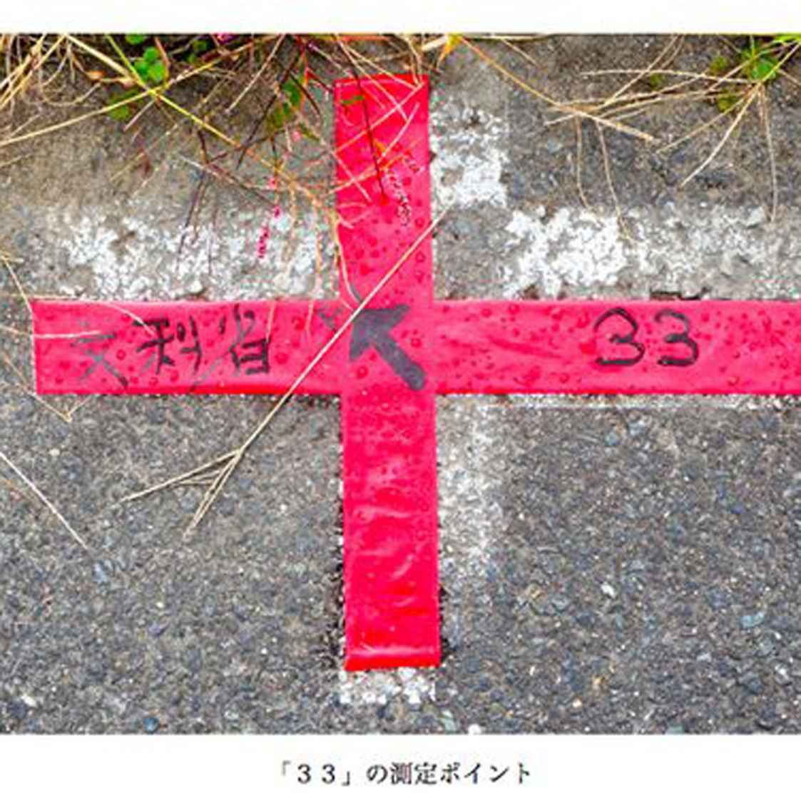
福島県サイドの「放射線量は減少傾向。避難の必要はない」という意見を、１１年３月２２日午前１時に原子力安全委員会は「線量は減少傾向とはいえない」と突き返す。ところが２１時間後、結論が一変する。
午後４時１０分、原子力災害対策本部事務局から長泥に関する新たなファクスが安全委に届いた。前日深夜に送ってきた県サイドの主張とほぼ同じ内容が書かれていた。要約すると▽３３付近の地区はここ数日線量が減少傾向にある▽飯舘村役場が不要な外出を控えるように呼びかけてもいる▽よって現段階では避難指示や屋内退避指示を出す状況ではないと考えるので、助言がほしい――。
午後１０時半、安全委事務局が出した回答は「避難地域および屋内退避地域の変更をする状況にはない」。県や原災本部の意向通りだった。
避難区域を広げるべきではない、という県サイドの考えに原災本部が同調、さらにそれに安全委が同調した構図になる。これによって、とりあえず長泥が避難区域に組み込まれる可能性は消えた。しかし......。
１１年３月２７日午後３時半、安全委は３１～３３について原災本部事務局に問い合わせをする。３１～３３付近に２００人ほど残留住民がいる情報がある、として状況を尋ねた。回答は、３１と３２付近の浪江町に１２８人程度、３３の飯舘村長泥周辺に１７８人。
１１年４月６日午前０時、最新情報を送れと再び要請する。原災本部の回答は、３１と３２は変化なし、長泥周辺は５０人増えて２２８人程度。
避難させる必要はないと見解を示したあとも、安全委は３１～３３の情報を求めた。特に住民がどのくらいいるかを気にしていた。気にしなければならないほど累積線量が増えていたということだろう。が、地元への指示や情報提供はなかった。
長泥へ測定に来る人間の何割かは防護服を着ていた。国際原子力機関が来た時も防護服だった。住民は思った。こっちは普通に生活しているのに、なぜ彼らは防護服なのか。一部を除き、長泥が危険だとは誰もいわなかった。伝わってくるメッセージは「大丈夫」だった。
長泥区長の鴫原良友がいう。
「原発の爆発で若い人たちは一度避難したんだが、その人たちも戻ってきたんだよ。自主避難だからカネもかかるし、３０キロ過ぎてれば大丈夫だといわれてたから」
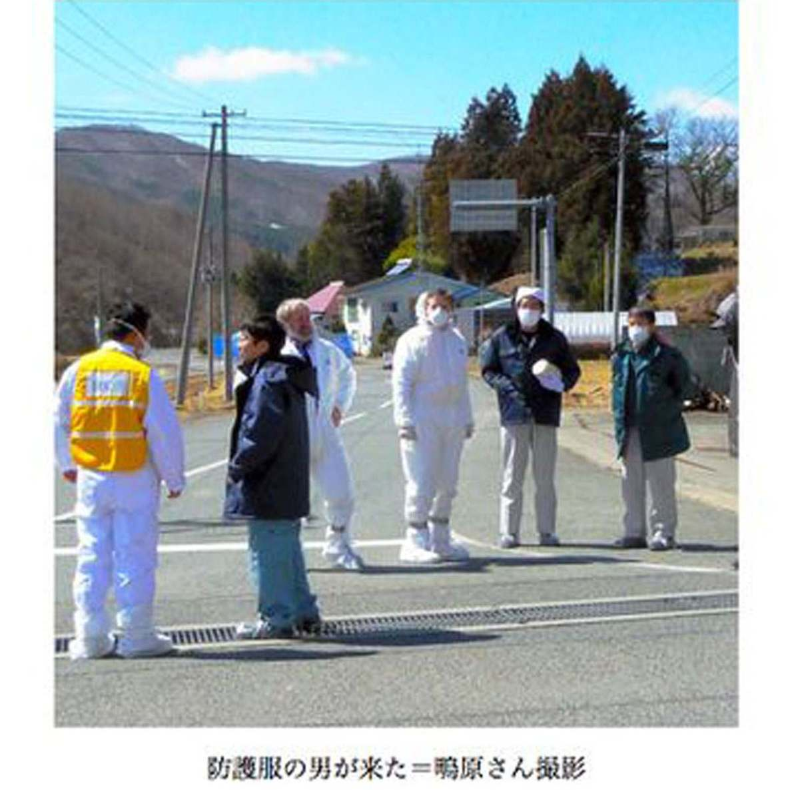
１１年の９月１７日、飯舘村長泥のため池にカメラを固定した水戸市の写真家、関根学（４７）は、１０月に２回長泥へ足を運んだ。
タッパーからカメラを取り出し、写真の記録を見る。が、何も写っていなかった。シャッターの改良に努めた。
初めて成果を収めたのは次に行った１１年１２月４日だった。見事、杭に乗るカワセミが記録されていた。
以後、月に２回の割で長泥に通った。本業は機械系の技術者なので、使えるのは土日しかない。
軽の四輪駆動で朝の５時前に水戸を出る。山間部をごとごと走り、長泥に着くのは４時間後。カメラと線量計の電池を換え、記録メディアを取り出し、地区周辺を回って生き物や風景を撮影する。水戸に帰りつくのはいつも午後８時前後だった。
固定カメラは多くの野鳥を写していた。ツグミ、ヒヨドリ、フクロウ、ヤマガラ、ホオジロ。魚を捕ったカワセミ、バッタをくわえるモズも写っていた。ため池周辺の小さな生態系で多くの生き物が生きている、そのことが伝わってきた。
１２年３月９日には杭をつつくニホンザルも写っていた。線量計が示すその日までの累積線量は、２４・２８ミリシーベルト。９月以降の１時間平均を単純計算すると５・８５マイクロシーベルトになる。
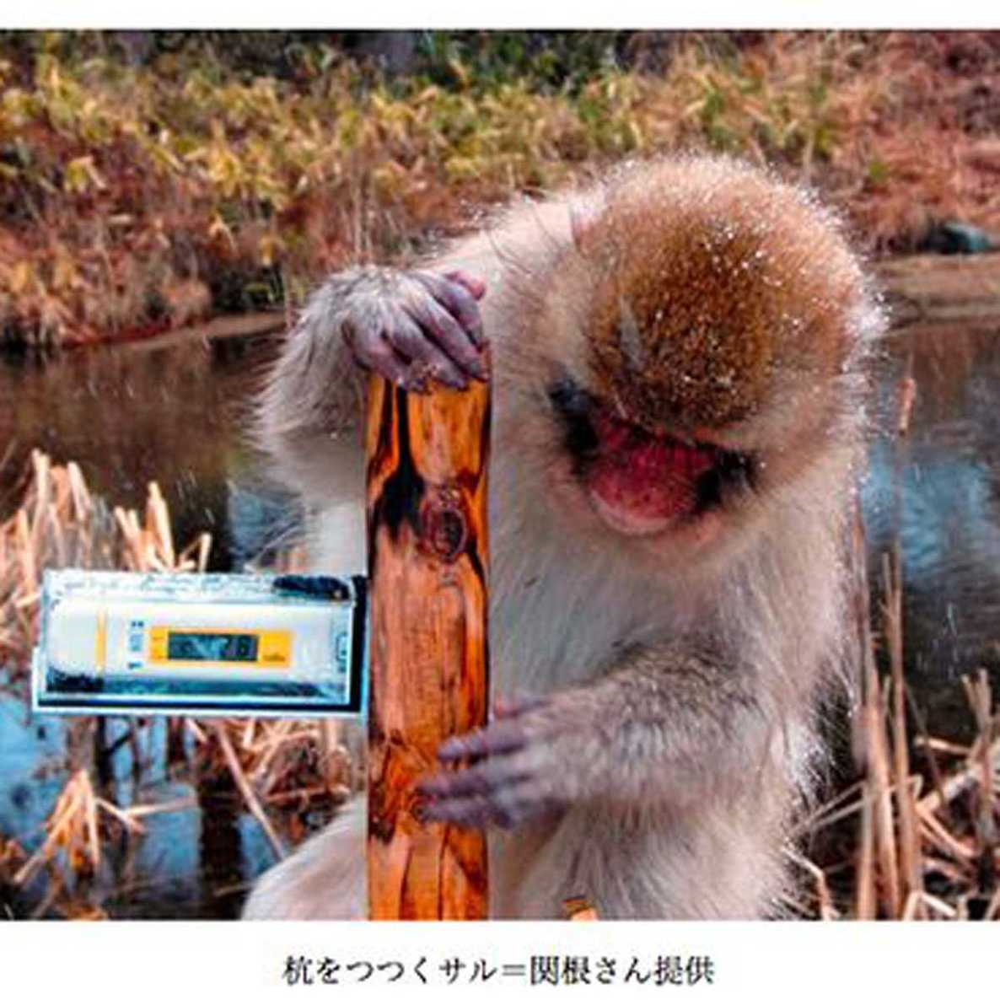
放射能によって生態がどう変化するかは分からない。たとえ変化が見えても因果関係は分からないだろうと考えている。しかし記録はしないといけない。それも５年、１０年という長い期間で、と関根は思う。
関根の頭に浮かぶのはチェルノブイリ事故後を撮った本橋成一（もとはしせいいち）（７２）の映画だった。「アレクセイと泉」や「ナージャの村」は、原発を告発はしない。放射能の怖さを描くわけでもない。汚染された地で淡々と生きる人々の営みを映しながら、見る者にさまざまなことを問いかける。
関根も淡々と長泥を写し取っていった。草の中に潜むネコ。ヘビが道路を渡る。テンが車にはねられて死んでいた。イノシシの食痕。タラの木がバラバラに切られていた。この春は桜がきれいだった。お地蔵さんの服が新しくなっていた。
別のため池にコイが泳いでいるのにも気がついた。
「ちっちゃなため池です。ため池の生き物ですから、コイも継続して見ていこうと思ったんです」
あるとき、コイに変化が起きていた。
１２年の３月４日、飯舘村長泥。ため池のコイが数匹死んでいた。
関根学（４７）が観察を始めたときコイは十数匹いた。黒いコイで、いつも元気そうに泳いでいた。どうして死んだのか、と思いながら見ていると、浮いた死体をカケスとセキレイがついばんだ。
１２年３月１８日。コイは５、６匹に減り、そのほとんどが体中カビだらけだった。なんともいえぬ異様な雰囲気に、関根は驚いた。
「水カビ病だったと思います。ため池ののり面から撮影しようとしたのですが、うまくいかない。たまたま水槽を持っていたので、それを水に沈め、カメラを入れて」
なんとかコイを撮影した。免疫機能が弱ったために病気にかかったのでは、と関根は思った。免疫機能の低下だとしたら放射能が関係しているかも、という考えが頭をよぎったが、もちろん根拠はない。とにかく記録することだけを考えた。
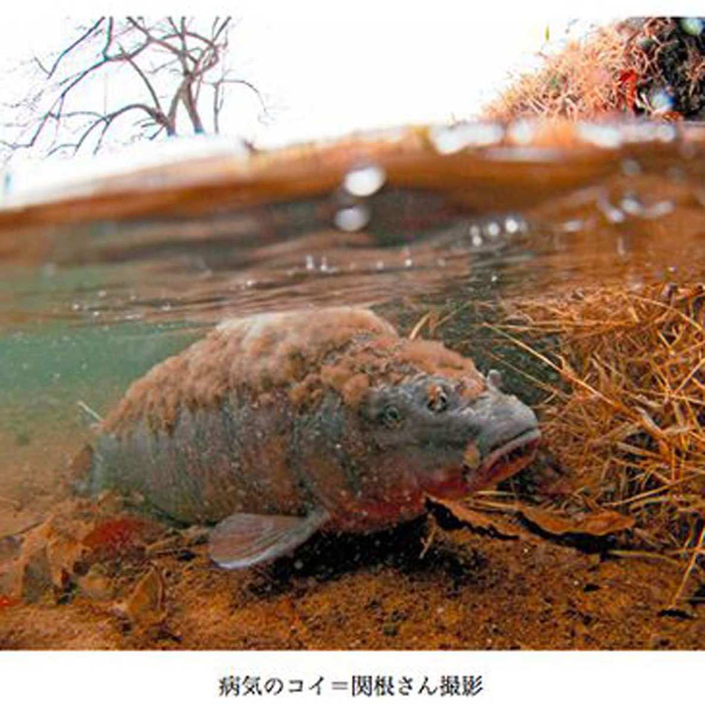
カワセミには変化は見られない。別のため池沿いにすみ、ため池の魚を捕って生きている。
関根はこう考えている。ため池には汚染物質が高濃度で蓄積する。浸透圧の関係で海水魚よりも淡水魚の方が放射性物質を取り込みやすい。ということは、ため池の魚やエビを捕って生きるカワセミに生態濃縮するのではないか。
しかし観察する限りではカワセミに変化はない。
丸太の杭につけた線量計の累積線量は、１２年４月に３０ミリシーベルトを超えた。最も線量が高かった最初の６カ月分を加えればおそらく１００ミリを超えた、と関根は思う。１年くらいでは影響は出ないだろうと思いながら、それでも「放射線が生物に与える影響はないのかも、という錯覚に陥ってしまう」と明かす。
野生への放射能の影響を調べるのは難しい。野鳥の生態に詳しい立教大教授、上田恵介（うえだけいすけ）（６１）が話す。
「仮に野鳥の免疫力が低下すれば感染症になります。そうなって体力が衰えるとタカに食われるかキツネに食われるか。死んでしまっても鳥の死体は見つかりません。タヌキとかがすぐ食べるからです」
病気の個体を捕獲して研究することは極めて困難、ということだ。ただ、生息数を調べることはできる。
上田は外国の研究者に協力し、１１年７月から長泥や浪江町で野鳥の種類と数を調査している。
結果を分析すると、ある傾向が浮き上がった。
野鳥の調査を主導するのは米国のサウスカロライナ大教授、ティモシー・ムソーとフランスのパリ第１１大学教授、アンダース・メラー。チェルノブイリ事故後の野鳥の生態を調べたコンビだ。
１１年７月と１２年２月、７月の３回来日し、福島県内で野鳥の種類や生息数を調査した。
調査方法は、（１）放射線量の高い地域、低い地域をバランス良く入れて３００地点を選定（２）歩きながら全ポイントを回る（３）１地点にかける時間は５分間。双眼鏡で見て、鳴き声を聞き、鳥の種類と数を調べる。
立教大教授の上田恵介は２人に協力、調査に加わった。
３００のうち高線量地域は浪江町赤宇木から飯舘村長泥にかけて。最も線量が高い場所は２０１１年の調査時で毎時３５マイクロシーベルト、低い場所は毎時０・５マイクロだった。視認の結果を分析し、林層などによる補正を施した結果、タイトルはこうなった。
「福島では放射線量の高い地域ほど鳥の数が減少している」。つまり線量と個体数に有意な相関関係があることを指摘した。
とはいえ「それが必ずしも放射線の影響だと結論づけることはできない」と上田は話す。結論を導くために、「これから毎年データを集める地味な仕事が続きます」。
長泥のため池にすむコイはその後２匹に減った。コイはため池から逃げようがない。同様に、カワセミも長泥に居続ける。
固定カメラで観察を続けながら、関根学はこんなふうに感じている。「長年の繁殖地を、生き物たちは簡単には変えないのかもしれない」
固定カメラにはヒヨドリもホオジロもヤマガラも写っていた。つまり放射能で汚染されたえさ場にすみ続けている。放射能を嫌うのなら別の場所に飛んでいけばいいのに。
もちろん放射能の影響がないとは思っていない。変化が出るのはおそらく５年後、１０年後。そこまで見続けるしかないと関根は考えている。
関根は厳冬期の長泥周辺が印象に残っている。数キロ四方に人間はいない。聞こえるのはヒューヒューという風の音だけ。荒涼とした白一色の世界に立っていると、地球上ではないような、この世でない地に立っているような感覚を受けた。
無人の家に向け、雪にキツネやタヌキ、イノシシ、ネコ、イヌ、野ネズミの足跡が延びていた。ノスリがネズミを捕ろうと辛抱強く何時間も電柱上で待っていた。
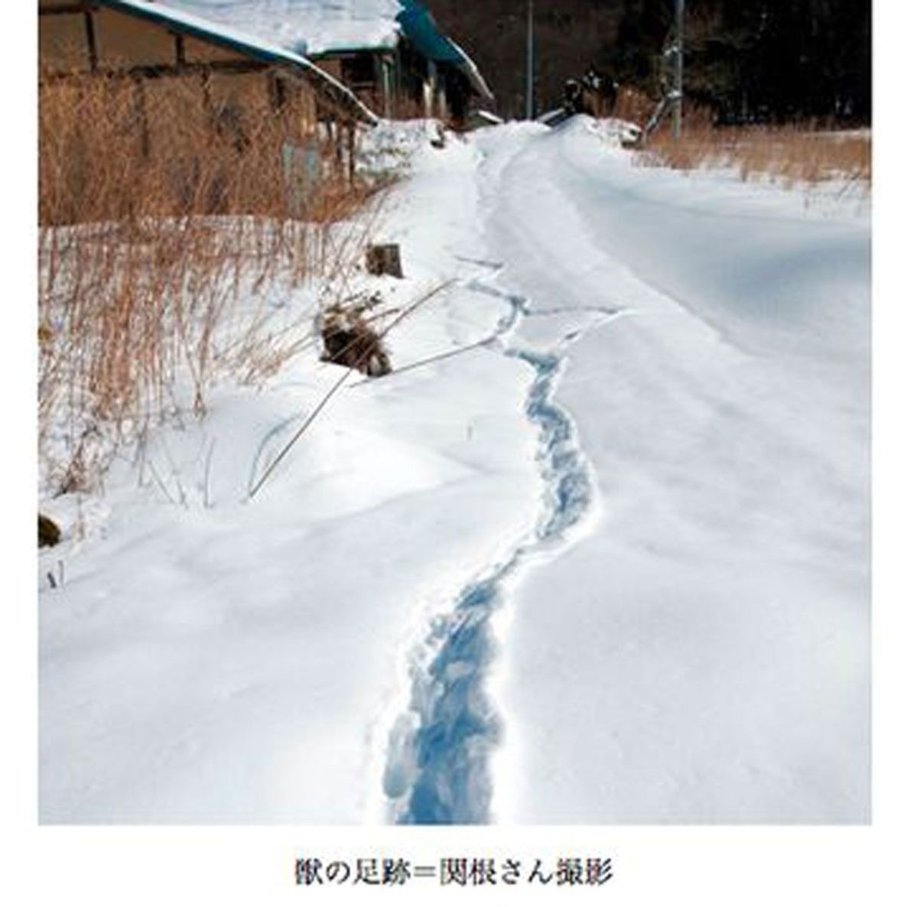
飯舘村長泥がバリケード封鎖される３０分前の１２年７月１６日午後１１時半、区長の鴫原良友（６１）がいらだった顔を見せた。封鎖後にかける鍵はダイヤル式だ。ところがダイヤルの数字が小さくて見えにくい。
「これじゃ地元のじいちゃんばあちゃん見えないべ。だって俺だって見えないも。見えないべ、ほら」
応対する原子力災害対策本部の内閣府参事官、斉藤和重が困惑した顔を見せる。鴫原の声が大きくなる。
「おらはカードキーにしろっていったんだよ。国の方ではカネがないっていうんだが。こっちが悪いことしたわけではねえんだから、時間かかってもカードにしてほしい」
バリケード封鎖後、報道陣に囲まれたときも怒りをぶつけた。除染で何億円も使うのに、なんでカードキーにするくらいできないのか。
「夜、誰かが緊急に入ろうとしてもダイヤル合わせられない。１カ月や２カ月じゃないんだから。５年間おらたちは入れねえんだから。何年かかってもやってもらいたい」
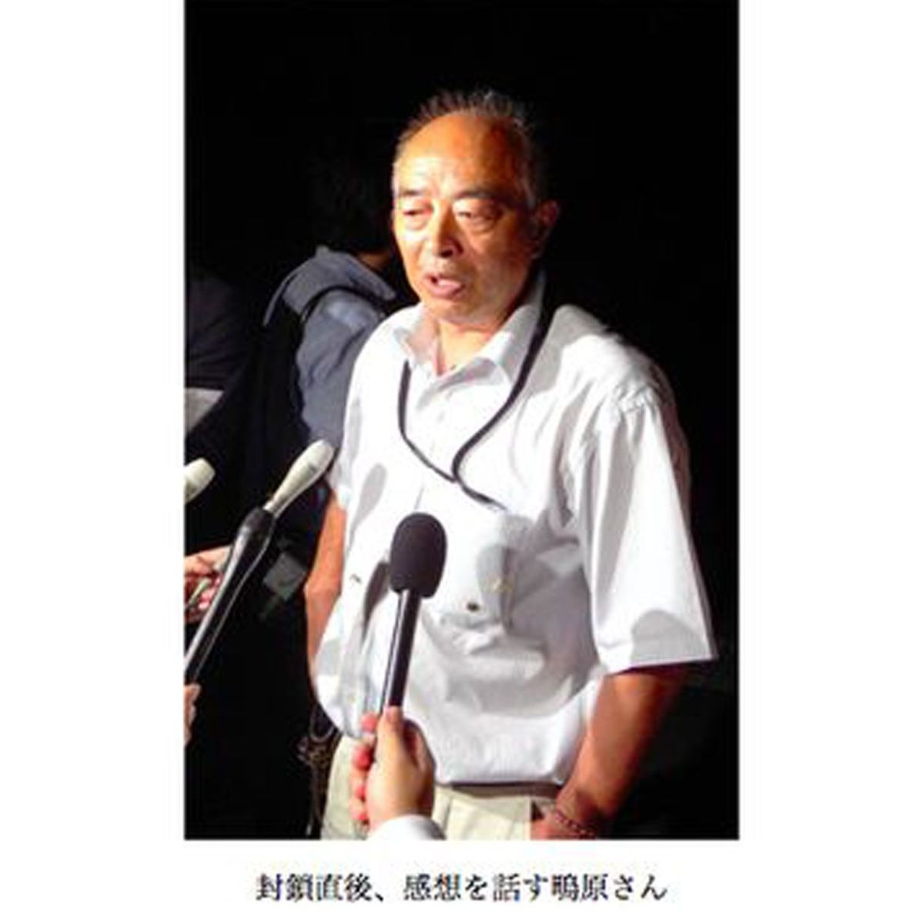
原発事故の前、鴫原は牛を育て、田畑を耕しながら南相馬市の工場でステンレスの溶接工をしていた。
「コメっていっても地区７０軒で５０町しか田んぼないんだよ。うちが１町５反だけど、それで上から５番目くらいだも。働きに出ないと生活できない。若い人は共働きしてる」
牛の繁殖を手がけているのは鴫原ら約１０軒。鴫原は母牛を４頭飼い、生まれた子牛を売っていた。
「４頭飼って年３頭生まれるのがせいぜい。１頭３０万で売れて、経費引いて２０万になったらいいんだよ。でも、なかなか......。１０万でしか売れないときもあるし」
鴫原の家は母屋と牛小屋がくっついている。子どものころから牛の息づかいを聞いて生活してきた。朝は３時か４時に起きて牛のえさとなる草を刈り、それを干す。午前７時前に家を出て工場で仕事。午後６時に家に帰り、また草を刈る。
「旅行もできなかったし、とにかく遠くに出るってことはほとんどなかったな」
ときには会社を休んで稲刈りし、共同で大量の草を刈る。
「コンバイン入って稲刈り３日ですむようになったが、前は半月かかったんだぞ。朝晩やって土日もやって、会社は１週間だけ休んで」
とにかく休みなく働いた。
「勤めながら朝晩働いて、そらつらかった。農村が過疎化するの、当たり前だわなあ」
飯舘村が全村避難を伴う計画的避難区域とされたのは１１年の４月。長泥区長の鴫原良友（６１）は６月２３日に牛を売ってから福島市の避難住宅に退いた。その日を境に、長泥から住民はほとんど消えた。
志賀隆光（しがたかみつ）（６４）はその後１１カ月、愛犬と一緒に１人だけ長泥に住み続けた。といっても昼間は村外に仕事に出かけ、主に夜だけ長泥の家に帰っていた。
１１年８月、自宅のリビングから長泥の風景を見やっていた。
「キツネの鳴き声、初めて聞いたんだよね。ぎゃっぎゃって言うからなんだろうと思って見たらキツネだった。イヌが追いかけてったな。タヌキもハクビシンも家に来たよ」
人がたくさんいたころ、子どもだったころの長泥の話になった。志賀の父親は年中出稼ぎをしていた。
「農地はね、大規模でないとやっぱり生活できない。だからこの辺の人、出稼ぎして、田畑のほかに牛飼ったり、鶏飼ったり」
家では乳牛を１頭飼っていた。朝は乳を搾ってから学校に行った。搾った乳を缶に入れ、わき水につけて冷やす。３０分かかった。
「田んぼは３反５畝（せ）くらいかな。とにかく手が回んないんだわ。お袋１人だし。草刈り機なんてないし、一輪車もなかったもんな」
冬は母親と炭焼きをした。炭を入れる袋は夜、カヤで編んだ。
「私ら小さいとき魚なんか食ったことないもん。自転車でたまに塩漬けの魚を売りに来たりしてたけど」
中学校までは片道９キロ。１時間半、歩いて通った。高校は南相馬市にある原町高校へ。通えないため、長泥を出て自炊した。
鴫原は相馬農業高の飯舘分校に進んだ。全日制の１期生だった。
高校を出た年、農閑期に出稼ぎに出た。２カ月、東京・神田で地下鉄工事現場。翌年も２カ月。今度は富山の工事だった。３年目は茨城で２カ月、トラックの運転手をした。
「俺は３年でやめたけど、ほかの人は１０年とか２０年出稼ぎしてたな。早い人で１１月から。秋祭り終われば出稼ぎだも。帰ってくるのは翌年の３月４月。次男三男は向こうで仕事見つけてな、もう戻ってこない」
鴫原は長男だったために長泥で生きてきた。大型や特殊の運転免許を取り、溶接の技術を身につけ、勤めと農業、牛で生計を営んだ。
「田んぼ守りながら、親を守りながらやってくしかないからな。家守ってな」
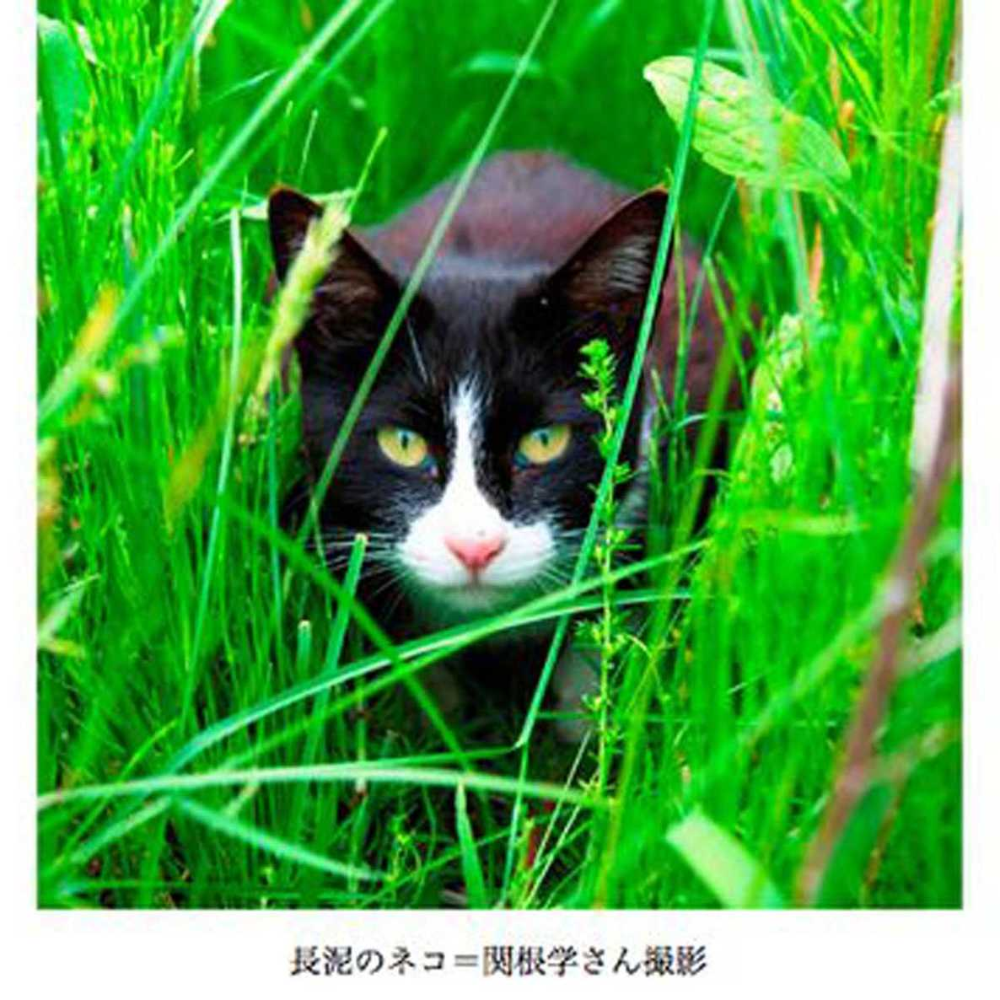
１２年７月１３日午後、飯舘村長泥区長の鴫原良友は東京地裁記者室のひな壇にいた。
脇に座るのは原発事故被災者支援弁護団の弁護士たち。この日夕、原子力損害賠償紛争解決センター（ＡＤＲ）に長泥の住民が集団で申し立てをする、その報告だった。
約３０人の記者を前に、鴫原は長泥について話し始めた。
「きょうは写真を持ってきたんですが、本当にきれいな穏やかな所です。そこが一瞬で放射能に侵されました。自分たちの暮らしを取り戻したい。が、簡単には戻れません」
Ａ４判に印刷された写真を何枚か出し、記者たちに向けた。
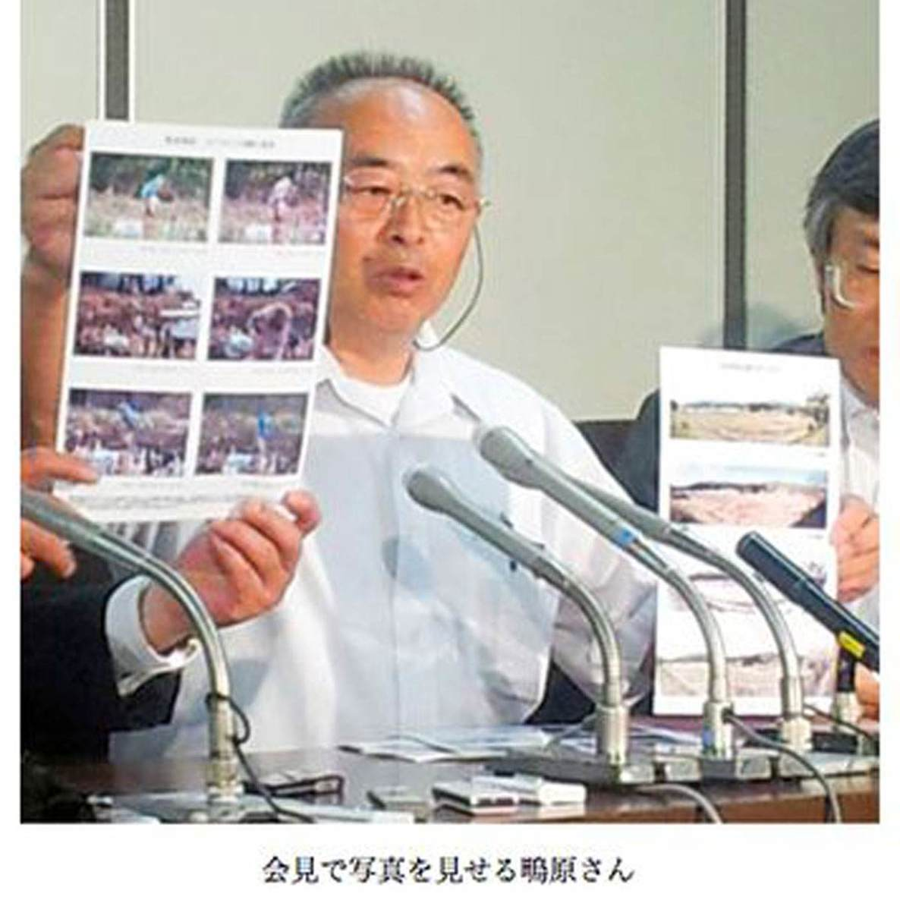
「こういうきれいな所なんです。私も知らなかったんですが、長泥にはこんなにきれいな鳥や生き物たちがいるんです」
鴫原が出したのは関根学の写真だった。固定カメラが撮ったカワセミやニホンザル、関根が撮影した四季の風景が並んでいた。
長泥のため池に固定カメラを据えたとき、関根は土地の持ち主にあいさつしようとした。しかし地区には誰もいない。やむを得ず「カメラを置かせてください」と紙に書いてカメラに貼った。持ち主に会えたのは何度めかに足を運んだときだった。カメラの設置を了解し、「頑張ってください」と励ましてくれた。
持ち主のいとこが鴫原だった。鴫原には電話をかけて１２年６月に会った。写真を見た鴫原は、そこに写る古里の美しさに魅入られた。以来、関根を深く信頼するようになる。
東京地裁の会見では弁護士の小林克信（かつのぶ）（５６）が概要を説明した。
７４世帯２７６人の長泥で、今回申し立てるのは資料が集まった４１世帯１５９人分。そのあと第２陣の申し立てをする。つまり地区の多数が申し立てに参加する見通しだ、と。
続いて小林は長泥の特色について言及した。
「３月１１日以降、長泥の住民の方々は放射能の放出量がかなり高い時期、その場所で２カ月以上生活しなければならなかった。そのことはほかの地域と違います。それに伴う将来に向けての精神的不安は、ほかの地域とは違う特色だと考えます」
不安について、前日に鴫原はこう漏らしていた。
「俺はいいんだが、子や孫が心配で。もう結婚できないのかな、という人もいる。若い人は不安をしょってくしかない。代われるものなら代わりたいって思う」
損害賠償の申し立てで打ち出した飯舘村長泥の「特色」。放射線値が高い時期、住民が２カ月間もそこに住み続けてしまった原因は、原発からの距離だけを避難の判断基準とした国の姿勢に起因している。
政府が２０～３０キロ圏を屋内退避としたのは１１年３月１５日。次は３０キロ圏までを避難区域にするかどうかが焦点になった。３月２５日になって政府は２０～３０キロ圏に自主避難を要請する。
３０キロ圏外は大きな話題にはならなかった。たとえば３月２３日午後、官房長官の枝野幸男はこう発言する。
「３０キロ圏外の一部においても年１００ミリシーベルト以上となりうるケースも見られますが、現時点で直ちに避難や屋内退避をしなければならない状況とは分析しておりません」
３０キロ圏外の高線量地域で、住民が住み続けていたのが３３キロ地点の長泥だった。１１年３月２３日昼の放射線値は毎時３５マイクロシーベルト。年１００ミリを突破する可能性があったが、一貫して国は大丈夫としかいわなかった。
枝野の発言が変わるのは１１年３月末。飯舘村の土壌から高い値の放射性物質が検出されたことを受け、３月３１日午前に「避難指示もありうる」との見方を示した。４月２２日、国は飯舘などを計画的避難区域とし、５月末までに避難しなさいと指示する。
最も線量が高い時期に大丈夫だと言っておきながら、１カ月以上たったあとに避難指示を出し、その１カ月後までに避難させる。さらにそれから１年以上もたった１２年７月、線量の高さを理由に長泥はバリケードで封鎖された。なぜ今になって、という思いを持つ住民は多い。
１２年４月２５日、飯舘村の仮役場がある福島市飯野町で長泥への説明会が開かれた。ある住民はこう質問した。
「直ちに影響はないっていうのを私ら信用したんですよね。影響はないっていうから私ら牛を売るまでいた。今さら立ち入り禁止になるとは思っていなくて、なんで今さらって。情けないというか......」
原子力災害対策本部の審議官、富田健介（とみたけんすけ）は「情報提供のあり方について多々問題があったことは申し訳ないと思っている」とした上で、「バリケードは他の市町村でも等しくお願いしている」と釈明した。
終了後、富田に「なぜ今封鎖？」と問うと、いらだった顔を見せた。
「だからあ、そんなことは分かってる、分かった上でいってるわけですよ。だけど飯舘だけ例外にできないわけですよ。公平性って大事なんじゃないですか？」
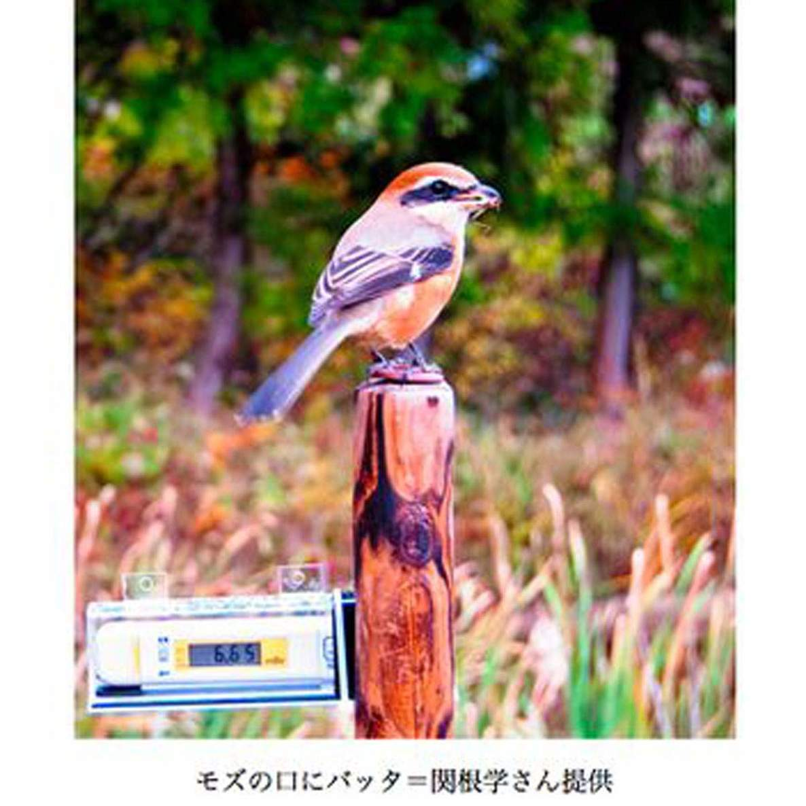
飯舘村長泥地区が紛争解決センター（ＡＤＲ）への集団申し立てを考え始めたのは２０１１年の末だった。
地区長の鴫原良友（しぎはらよしとも）は、悩みに悩んだ。ＡＤＲに申し立てるのは村では少数派だ。「弁護士代いっぱい取られるぞ」という声もあった。住民たちと話し合いをし、何度も弁護士の説明を聞いた末に決断した。
背景にあるのは不信感だった。東京電力への不信感であり、国や県、村への不信感でもある。
「賠償は進まないし、賠償の内容も、このままでは東電のいいなりになっちまうんじゃないかと。自分らの身は自分らで守るしかないから」
たとえば家屋の賠償。長泥では築５０年を超える建物を修繕しながら使っているケースが少なくない。
住むには何の支障もないのだが、問題は固定資産税評価額だった。築年数の古い家屋は評価額が低い。ということは固定資産税が賠償基準になった場合、賠償額は極めて低くなる。それでは生活再建はできない、という懸念を鴫原は持っていた。
懸念を意識するかのように、１２年４月２５日の説明会で国はこう説明した。
強調したのは「生活再建がきちんとできるよう」にすること。その上で「固定資産税的には評価額が非常に低い家であっても、それはいったん新品時の評価に戻させていただいて、収用法などを参考にしながら」賠償することを考えている、と。
収用法とはダムや道路を造るときに使う法律。建設予定地にある家や土地を撤去する際、この法律の定めに基づいて賠償をする。家屋だと、別の場所に同じものを移転・建築する費用が賠償される。
支援弁護士の小林克信は収用法を基にした賠償が実現するかどうかが鍵だと考えていた。「国は収用法を口にしますが、実際には違うのではないかと懸念していました」
１２年７月２４日、東電が発表した賠償基準は小林の懸念通りだった。基本になったのは固定資産税評価額と国土交通省が公表する平均新築単価。どちらにしろ、築年数が経過した家屋の賠償額は極めて低くなる。
小林らが築６０年・広さ２００平方メートルの鴫原の家を収用法の基準で個別評価すると約３千万円だった。ところが固定資産税評価額を基にした東電基準では約１００万円。
東電は「別途、個別評価で賠償」の道も開いている。家屋の再建には収用法を基にした個別評価をさせるしかない、それは今後の交渉次第だと小林は考えている。
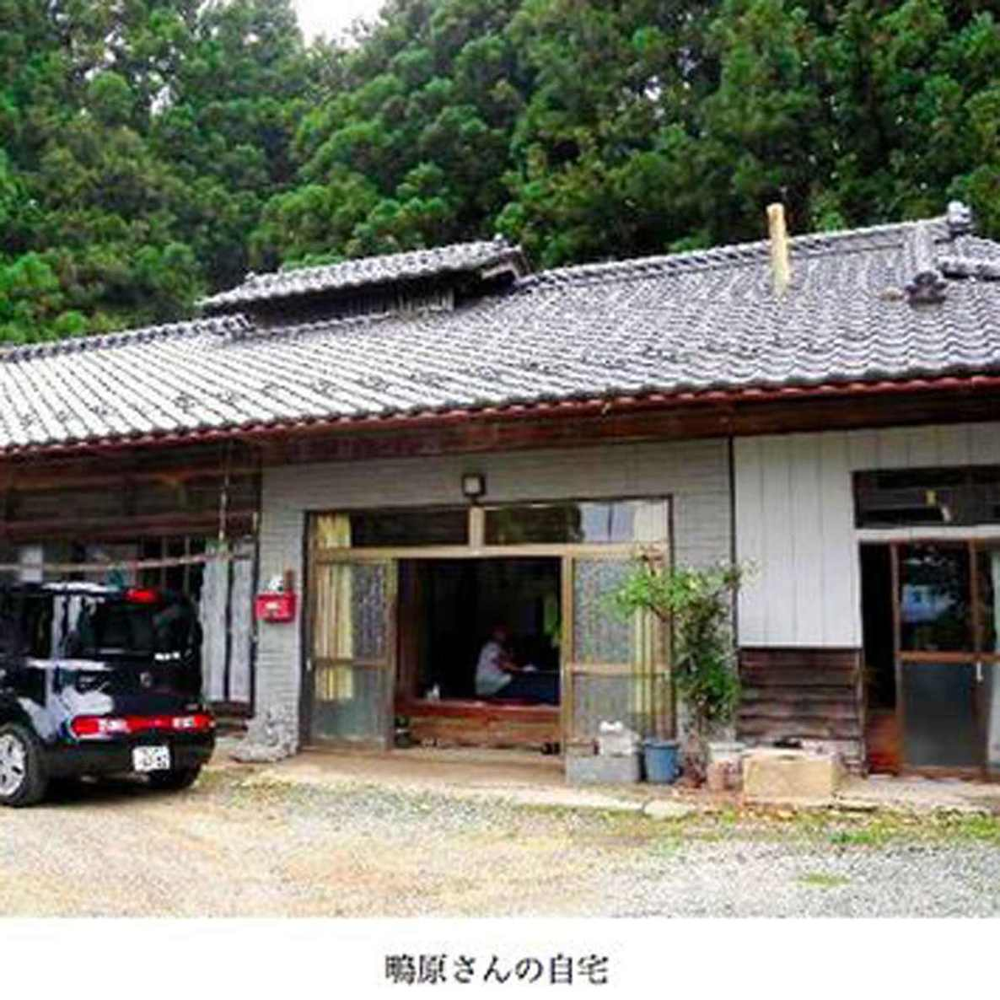
賠償の先行きが見えない中、飯舘村長泥の人たちの間にはいらだちに近い思いも出始めている。
福島市の避難住宅に住む菅野恵一（５０）は市内に家を購入することにした。何より母親の部屋と仏壇を置くスペースが欲しかったからだ。中学生と高校生の息子が間もなく受験を迎えるということも考えた。
長泥の家は部屋が九つもあった。一部屋の大きさは８畳または１０畳。風呂もトイレも大きかった。生活にゆとりがあった。
母のミイ（８１）は、長泥では２部屋を使うことができた。畑に出て体を動かしたし、友達が家に来ておしゃべりすることもあった。
今、ミイは避難住宅の小さなリビングにベッドを置いて寝起きしている。外に出ることは全くといっていいほどなくなった。しかも暑い。ベッドの横に座り、小さな声で「なんでこんなに暑いんだべ」。傍らには位牌（いはい）が置いてある。菅野がいう。
「息苦しいんだよなあ。長泥の家から比べると何しても小さいから。それにこの暑さはだめだな。いや、暑い、暑い。長泥はエアコンなんかいらなかったし。暑さには負けるなあ、眠れないんだから、毎日」
国も県も村も何にもやってくれない。だから自分でやるしかないさ、と菅野は話す。予定する新居の大きさは長泥の家の半分以下だが、避難住宅よりは広い。最初は貸家を探したものの、適当な物件がない。ならば思い切ろう、と考えた。
しかし東京電力からの賠償が入る見通しは見えない。とりあえず家の代金は自分で用意する必要がある。
「大変だよ。いま仕事してないでしょ、ローン組めないんだよ。会社から『仕事に復帰します』って証明書をもらって、それで一部だけ借りることができた」
ローンを借りた銀行には「賠償金が入れば一括して払う」と一筆入れた。賠償金が入るまで、ローンの金利を負担しなければならない。
「ほんとは代わりのものを与えてくんないといけないんだよな。同じ大きさの家とか」
家がほしいと思う住民は多い。
バリケード封鎖された１２年７月半ば、長泥は住民アンケートを行った。住居要望は「自分の住みたい場所に戸建ての持ち家」が最も多く、回答した９０人のうち３３人。続いて「長泥の住民が集まって暮らせる場所に戸建ての持ち家を新築」が２２人。
８％の人が新居の計画を進めていることも分かった。
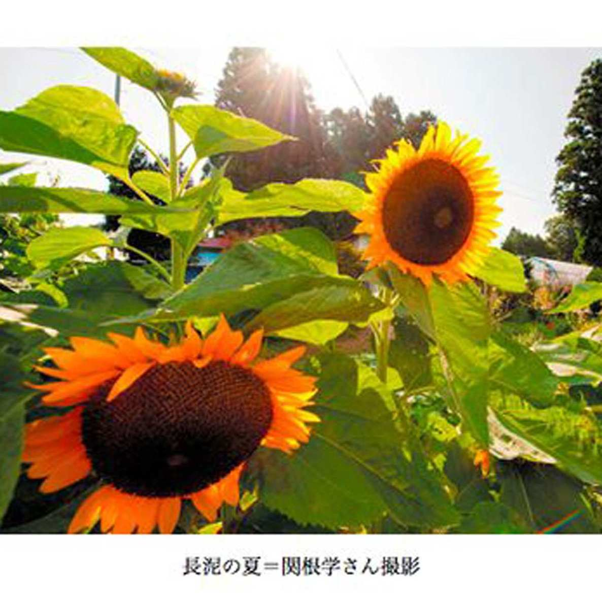
飯舘村の南端には西から比曽、長泥、蕨平の３地区が並んでいる。
明治の初めまで、３地区を合わせた地域が比曽村だった。藩政時代の初期に開拓されたのが比曽地区で、残る２地区は後になって開かれたのではないかとみられている。
長泥の比曽寄りに個人の家の入植記念碑が立っていて、「明治１６年、飯曽村大字比曽字長泥に入植」とある。長泥区長の鴫原良友は「長泥辺りが本格的に開拓されたのは明治になってからではないか」と話す。
飯舘村史によると、自然環境が厳しい飯舘村の中でも比曽村はさらに過酷な環境だった。
１７８３（天明３）年、比曽の戸数は９１。ところが同年から数年間続いた天明の大飢饉（ききん）で人口は激減。１８４８（嘉永元）年には２８戸になっている。標高が高いだけに、冷害の影響を受けやすかった。
特徴は馬産で、１８７２（明治５）年には戸数３７で１７６匹を飼育していた。馬の飼育の伝統が現代の牛の飼育につながった旨の記述が飯舘村史にある。ほか、炭の生産にも携わっていた。農業生産力の低さを畜産と林業で補う、昔からそんな構図だったことが見て取れる。
今の長泥を鴫原が説明する。
「ハウスで花をやっている人が３、４軒いるな。トルコキキョウとかリンドウ、グラジオラス。露地では大根とホウレン草か。タラの芽もやってるけど、反１０万か２０万にしかならない。ハウスのシイタケは金になるけど、元手がかかる。菌買うのに１００万とか２００万とか」
鴫原はアスパラをやり始めていた。が、ことしから売ろうという矢先に原発事故が起きた。
「コメは反当たり７俵。１俵６０キロで７千円、補助入れて１万２千円だ。俺は稲わらを牛のえさにするから回転してるけど、収入なんてほとんどゼロだからな。機械買ったらマイナスになるからな」
コンバインに６００万円、もみすり機と一緒に買って１千万円。トラクターもいる。農業収入から返すのは難しい、だから働きに出る。
半面、暮らしにはあまり現金を必要としなかった。
コメも野菜も森のキノコも自給だし、水は地下水、風呂は薪、エアコンも要らない。賠償とはあらゆるものをカネに換算することだが、キノコを始め長泥にはカネに換算しづらいものが多い。なにより先人が費やした開拓の努力は簡単にはカネに換わらない。
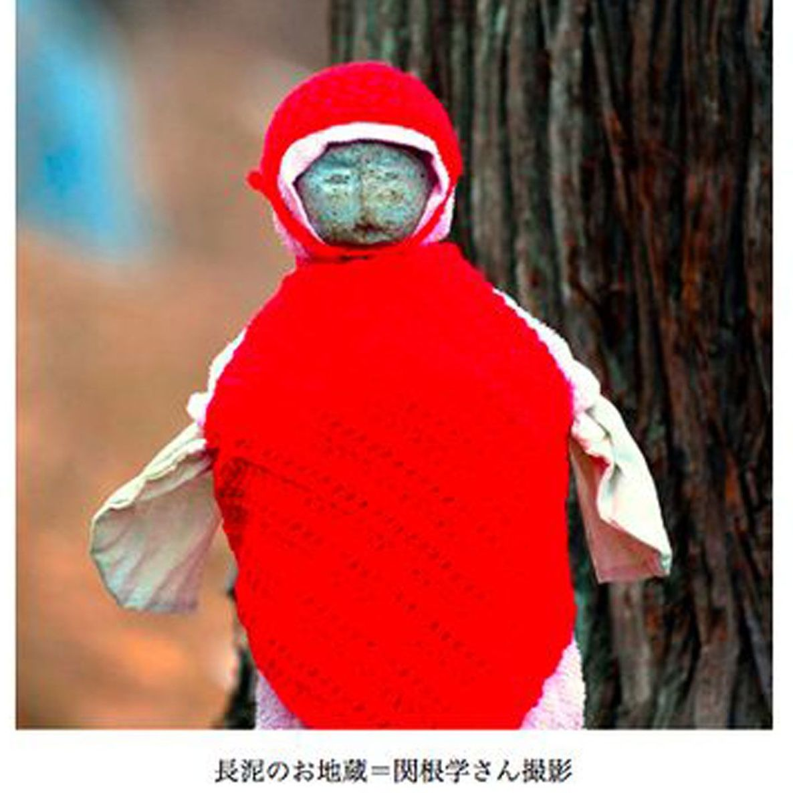
「子供を持ってる人は年１ミリシーベルトになっても戻らないっていってる。でも、親が開墾するのを見てた世代はそんなに簡単に土地を捨てられるとも思えない」
飯舘村長泥の区長、鴫原良友がため息をついた。
帰還困難区域は年５０ミリシーベルト超の積算線量が予想されている。バリケードが解除されるのは５年後以降の、年２０ミリ以下になったとき。そのときを待ちかねて帰る人もいるだろう。だが、１０ミリや２０ミリでは帰らない人も出る。家族の間でも行動が分かれるかもしれない。
家族ですら引き裂かれる現実。飯舘村長の菅野典雄（６５）は、放射能災害の特異性を「分断」とみる。
「重い軽いでいったら津波で家族を失った人の苦しみが数十倍重い。泣いて、苦しんで、もがいて......。だけどいずれはゼロからスタートできる。私たちはゼロからスタートできないんです。ゼロに向かってこれから長い間、世代を超えて、不安と闘いながら進まなきゃいけない」
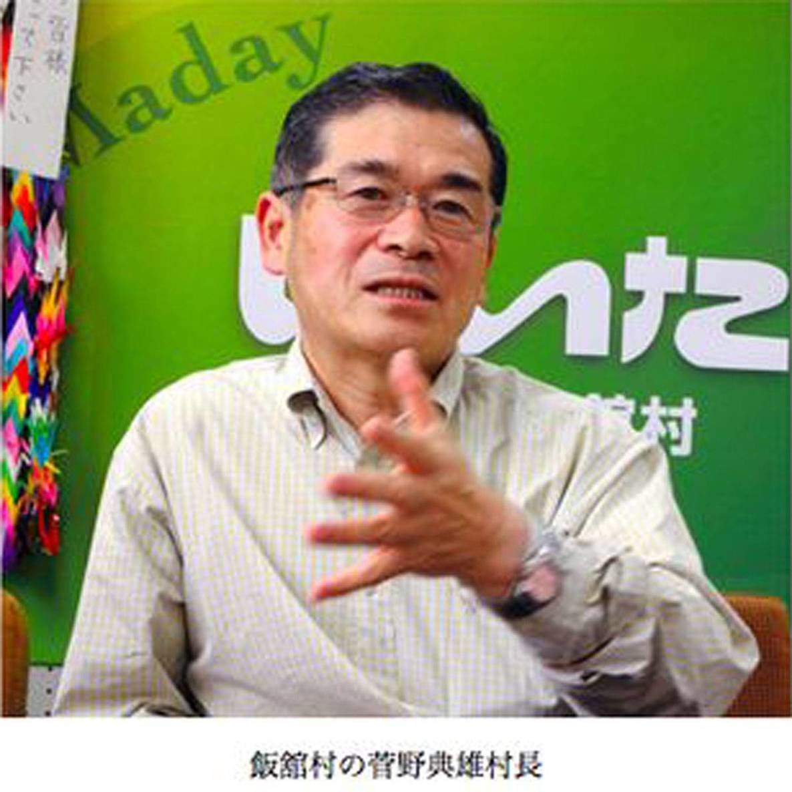
福島市飯野町にある仮の村役場。菅野の口調は熱い。
「もう一つの特異性が分断です。ほかの災害は家族も地域も結束するんです。放射能はその逆、分断の連続です。家族の中で違う。線量の高い所と低い所も違う。帰りたい人、帰りたくない人でも違う。放射能は心の分断を作っているんです」
賠償に伴う心の分断も出始めている。鴫原がいう。
「長泥はいいなあっていう人もいるんだよ、ほんと。なーにをいってんだと思うんだが」
帰還困難区域は５年分の慰謝料が一括して出る。家屋敷にしても全損扱いで賠償される。それが一部の村民にうらやましがられている、と鴫原の心はざわめく。
一括賠償を鴫原はうれしく思っていない。むしろ心配の種だ。たとえば今、１人につき１カ月１０万円の慰謝料が出ている。一括で出るということは、５年分で６００万円。５人家族だと３千万円。
「パチンコもしねえし飲みにも行かねえでやっと暮らしてきた」と鴫原は話す。そういう自給自足型の集落で生きてきた人が街に避難し、多額の現金を得たらどうなるか。
街で暮らすにはお金がいる。賠償金をよほど大事に使わないと今後の生活再建が危うい。「使っちゃうと暮らされなくなる」と鴫原はいう。
実は村長の菅野も同じ懸念を感じている。
「福島に大臣が来たとき、言ったんです。財物補償きますよね、営業損害もきますよね。牛１０頭くらいいれば２千万円くらいになるのかな。それ、一括なんですよね。あなたおかしいですよって言ったの。そんなに一気にくれたらやめちゃうですよって」
帰還困難区域とされた飯舘村長泥への５年分一括賠償について、村長の菅野典雄が憤る。
「ところが向こうは、再興するにはカネかかるから一括して払うって。そこが机の上でやってる人と現場のミスマッチなんですよ。本当は一年一年、年に１００万取ってたのが３０万になったのなら８０万、９０万補償しますよっていう制度を、つまり生活の支援制度をつくんないとだめだよっていう話をしたんですが」
菅野は「一括賠償」ではなく「生活支援」が大事だと主張している。賠償金だと、それを元手に新しい生活を築かないといけない。あるいはそれを少しずつ使いながら長く生活を続ける必要がある。だがそれを個人任せにして大丈夫か。それよりも長く生活を支援し続ける方が大事なのではないか、と。
「ずーっと前からそれを言っているんですけど、国の人たちは聞かないんですよ。カネで早く解決したいという思いだけを持ってるから」
放射能雲が飯舘を襲ったあと、住民を積極的に避難させなかったことに対して菅野は村外からも批判を受けた。役場に「殺人者」と指弾するメールまできた、と明かす。
あのとき、県から長泥に派遣された専門家は「ここにいても大丈夫」と説明した。菅野はその言葉を信頼するが、住民には無用な被曝（ひばく）をしたという思いが強い。区長の鴫原良友は矛先を国や専門家に向け、「大丈夫だといい続けて長く被曝させた、あれだけは許されないと思う」。
菅野は今、地域コミュニティーの維持に力を注ぐ。仮設、避難住宅は仮庁舎から１時間以内の場所に見つけ、その１時間圏を「仮の村」と表現する。コミュニティーの維持が住民を守ることだと考えている。
しかしそれが理解されているか、といえば難しい。
「村長は村を残したいだけでしょう、という村民が結構います」
村長としての１６年間、菅野はゆっくりと丁寧に生きる村づくりを進めてきた。その村が放射能によってズタズタにされていく現実。菅野はうめくように言った。「はらが煮えくりかえる思いです」
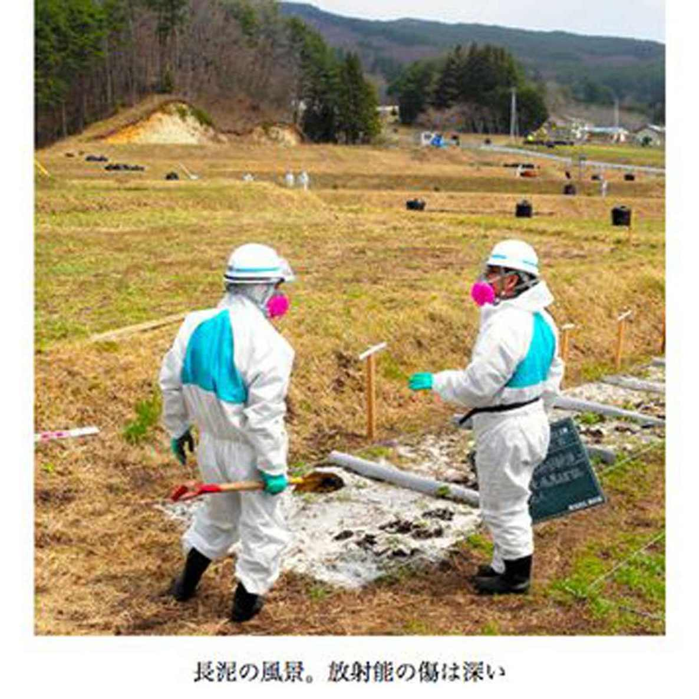
１１年の秋、飯舘村長泥区長の鴫原良友は自分にいい聞かせるかのように「２年だな」と話していた。
居心地の悪い避難生活も２年なら耐えることができる。だがそれ以上は難しい。だから、鍵は２年。
最も居心地が悪いのはやることがないことだ。１２年７月、東京・阿佐谷の小さな集まりに招かれたとき、しみじみとこう話した。
「忙しいくらいありがたいことはないよ。やることがなんもないほどつらいことはない。働いて暮らしていけることが一番大事だと思う」
２年の目標は７月のバリケード封鎖で消えた。封鎖は最低でも５年間続く。あと５年は帰れない。
バリケード封鎖が決まったとき、鴫原は「俺としては３年がぎりぎりだったんだ」と漏らした。バリケード封鎖後にはこういった。
「たぶん６年でも戻れないだろうな。長泥はもうなくなっちゃうんじゃないかと思うな」
１２年７月に行った長泥地区のアンケート結果を見ると、前途の険しさが分かる。
回答した９０人のうち、将来的にも長泥には戻らない公算が大きいと答えた人が３３人。「不明」と「その他」を除いた残る４３人の中で、戻る条件として「年１ミリシーベルト未満」を挙げた人が２９人を占めた。
帰還困難区域は放射線量が年５０ミリシーベルトを超える場所。そこが１ミリ未満まで下がるには数十年レベルの期間と除染が必要だとみられる。事実上無理、とみる住民もいる。それを考えると９０人のうち実に６２人・約７割は帰らない、あるいははるか先まで帰れない可能性が高い。
阿佐谷の集まりにも鴫原は関根学の写真を持って行った。長泥はこんなにきれいな所なんだ、といいながら集まった人に長泥の風景やカワセミの写真を回した。
５年後に封鎖が解除されたとしても、以前の長泥には戻らないかもしれないと鴫原は感じ始めている。
緑に包まれ、色とりどりの花が咲き、子どもがいて、牛がいて、小さな生き物がいっぱいいて、みんなが働いて、作った野菜はお互いに融通し合って、花見をして、草刈りをして、ときには集会所でカラオケ大会を開いて。そんな長泥は、もう戻らないかもしれないな、と。
集まった人に向け、鴫原が最後にいった言葉はこうだった。
「失ってみないと、今の暮らしのありがたさは分からないと思います」
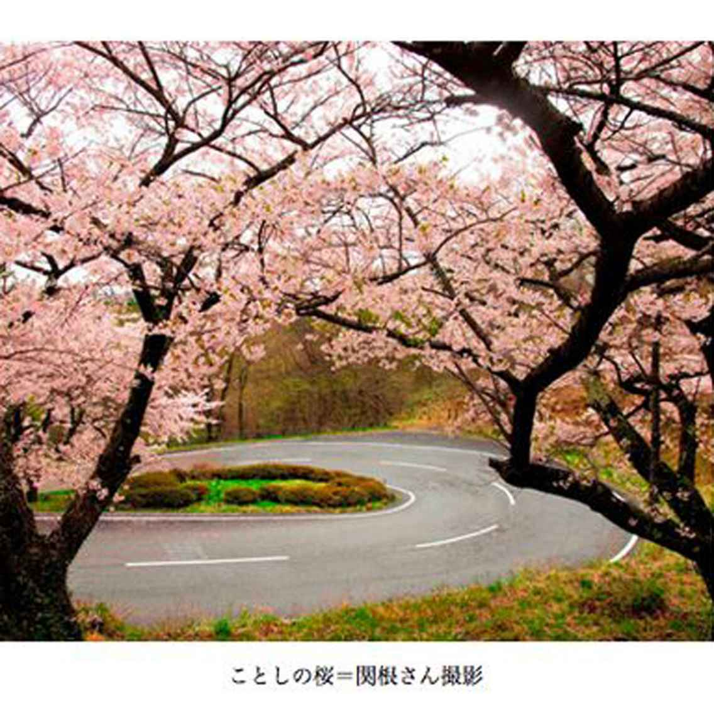
水戸市の写真家、関根学（４７）は飯舘村長泥が封鎖された後も地区内の写真を撮り続けている。
長泥区長の鴫原良友（６１）が集落の写真撮影を依頼、バリケードを通過する際に同行するなど幾つかの便宜を図った。鴫原としては、長泥の生き物や風景をできるだけ記録してほしいと願っている。
関根は鴫原の家の庭にも固定カメラを据えた。鴫原の家は高台にあり、庭からは長泥の風景を望むことができる。１日１枚、シャッターが切れるようにセットした。
ため池の固定カメラはカワセミや小さな生き物たちを撮り続けている。放射能さえなければ、ため池は生き物たちの楽園だ。その楽園がどう変わっていくのか、５年先、１０年先まで淡々と記録する。
距離的にも、意識の上でも長泥は原発とは縁が薄かった。
福島第一原発からの距離は３３キロ。原発マネーが入ることもないし、原発事故を想定した訓練をしたこともない。原発を意識することは少なかった。その感覚は原発事故後も続いた。耳に入るメッセージは「３０キロ離れれば大丈夫」だったからだ。
長泥の放射線量が急増したことを国や県は知っていた。長泥を避難区域に入れるか、入れないか。水面下で国、県は揺れた。事故の１０日後、県側は避難区域とするべきではない、との考えを打ち出す。第一の理由は「線量が減少傾向にある」だった。原子力安全委員会は「減少傾向ではない」と一度突き返すが、結局は県側の考えを認める。
そんなやり取りが行われていることも、線量の持つ意味も、長泥の人たちには届かなかった。何も知らされないまま、最も線量が高かった１１年３～５月に人々は住み続けた。１２年７月にバリケード封鎖された理由は線量の高さだが、それよりもはるかに高い線量の中で住んでいた。
鴫原に怒りや嘆きはある。が、今は避難している地区民とのコミュニケーションや賠償、帰還など、考えることの方が多すぎる。
１２年９月３０日には長泥地区の交流会を福島市の飯坂温泉で開く。７４世帯・２７６人のうち１００人近くが参加するとみられている。鴫原はそこで関根の写真をスライドにして上映しようと考えている。自分たちの集落の美しさを目に焼き付けておいてもらうために。
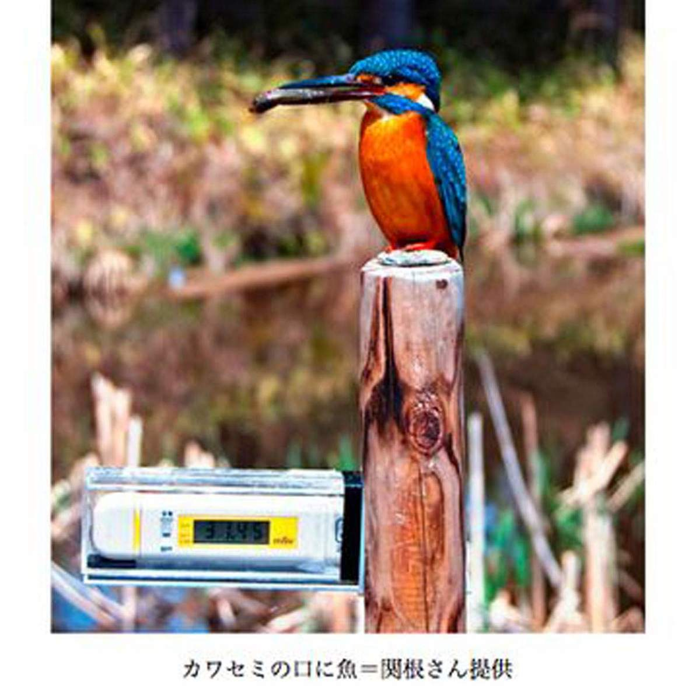
プロメテウスの罠〔１６〕 カワセミ日記「あと５年は戻れない」
著 者 朝日新聞（依光隆明）
発行所 朝日新聞社
〒１０４―８０１１ 東京都中央区築地５―３―２
http://www.asahi.com/
発売所 朝日新聞社デジタル本部
〒１０４―８０１１ 東京都中央区築地５―３―２
http://www.asahi.com
２０１２年１０月５日 ＷＥＢ新書版発行
２０１３年１１月３０日 ＥＰＵＢ版発行
©2012 The Asahi Shimbun Company
All rights reserved. No reproduction or republication without written permission.
ISBN 978-4-90712-565-3
〈ご注意〉本コンテンツは、購入者個人の閲覧目的のためのものです。私的範囲を越える利用・譲渡などは禁止します。
〈おことわり〉本コンテンツは２０１２年１０月５日に刊行されたＷＥＢ新書版を底本としました。ＥＰＵＢ版の刊行にともない、体裁や表記を直した場合があります。 企業、組織などの名称、人物の役職、肩書等はいずれも記事初出当時のものです。